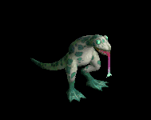
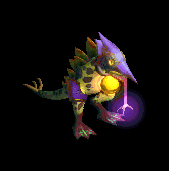

盾 をドロップするmob一覧
一覧ページへ
| 攻撃骸骨戦士 | アンデット | 一般2 | |||||||
|---|---|---|---|---|---|---|---|---|---|
 | 両手剣(380) | ステッキ(250) | 盾(380) | 足(210) | 槍投擲機(190) | 帰還(150) | 鎌(380) | ||
| 死の斧 | アンデット | セミ1 | |||||||
 | 両手剣(390) | ステッキ(260) | 盾(390) | 足(220) | 槍投擲機(200) | 帰還(160) | 鎌(390) | ||
| 地獄の斧 | アンデット | ボス1 | |||||||
 | 両手剣(470) | 鈍器(310) | 盾(470) | 足(260) | 槍投擲機(240) | 帰還(190) | 鎌(470) | ||
| リビングメイル | アンデット | 一般2 | |||||||
 | 弓(380) | 片手剣(250) | 盾(380) | 鎧(210) | 手首(190) | 能力向上1(150) | クロー(250) | 銃(380) | |
| 幽霊鎧 | アンデット | 一般4 | |||||||
 | 弓(300) | 両手剣(200) | 盾(300) | 鎧(170) | 手首(150) | 能力向上1(120) | 鎌(200) | 銃(300) | |
| 守護鎧 | アンデット | セミ1 | |||||||
 | 弓(390) | 片手剣(260) | 盾(390) | 鎧(220) | 首(200) | 能力向上1(160) | クロー(260) | 銃(390) | |
| 幻想鎧 | アンデット | ボス1 | |||||||
 | 弓(470) | 両手剣(310) | 盾(470) | 鎧(260) | 手首(240) | 能力向上2(190) | 鎌(310) | 銃(470) | |
| 偽伝道師 | 人間 | 一般2 | |||||||
 | 鈍器(380) | 翼(250) | 盾(380) | 職業鎧(210) | 冠(190) | 十字架(180) | 水晶(250) | ||
| 偽聖職者 | 人間 | 一般4 | |||||||
 | 鈍器(300) | 翼(200) | 盾(300) | 職業鎧(170) | 首(150) | 十字架(200) | 水晶(200) | ||
| ダークビショップ | 人間 | ボス2 | |||||||
 | 鈍器(490) | 翼(330) | 盾(490) | 兜・帽子(270) | 首(250) | 十字架(220) | 水晶(330) | ||
| エルフ暗殺者 | 人間 | 一般4 | |||||||
 | 片手剣(300) | 投擲(200) | 盾(300) | 兜・帽子(170) | 指輪(150) | 腕刺青(130) | クロー(300) | ||
| エルフ騎士 | 人間 | セミ2 | |||||||
| 片手剣(420) | 槍(280) | 盾(420) | 鎧(230) | 指輪(210) | 腕刺青(150) | クロー(420) | 箒(280) | ||
| 鷲戦士 | 悪魔 | 一般1 | |||||||
 | 片手剣(410) | 両手剣(270) | 盾(410) | グローブ(230) | 手首(210) | 腕刺青(110) | 鎌(270) | クロー(410) | |
| 鷲闘士 | 悪魔 | 一般2 | |||||||
 | 片手剣(380) | 弓(250) | 盾(380) | グローブ(210) | 手首(190) | 腕刺青(120) | クロー(380) | 銃(250) | |
| 鷲剣士 | 悪魔 | セミ1 | |||||||
 | 片手剣(390) | 両手剣(260) | 盾(390) | グローブ(220) | 手首(200) | 腕刺青(140) | 鎌(260) | クロー(390) | |
| 鷲王 | 悪魔 | ボス1 | |||||||
 | 片手剣(470) | 弓(310) | 盾(470) | グローブ(260) | 手首(240) | 腕刺青(150) | クロー(470) | 銃(310) | |
| ストーントルド | 悪魔 | セミ3 | |||||||
 | none(450) | 鈍器(300) | 盾(450) | 腰(250) | 手首(230) | 能力向上2(180) | |||
| 淡水亀 | 動物 | 一般1 | |||||||
 | ステッキ(410) | 杖(270) | 盾(410) | 鎧(230) | 冠(210) | 能力向上2(160) | 本(270) | ||
| ビッグシェル | 動物 | 一般3 | |||||||
 | ステッキ(360) | 杖(240) | 盾(360) | 鎧(200) | 冠(180) | 能力向上2(140) | 本(240) | ||
| タートルドラゴン | 動物 | ボス1 | |||||||
 | ステッキ(470) | 杖(310) | 盾(470) | 鎧(260) | 冠(240) | 能力向上2(190) | 本(310) | ||
| スコーピオン | 動物 | 一般1 | |||||||
 | 弓(410) | 槍(270) | 盾(410) | 兜・帽子(230) | イヤリング(210) | 特殊1(160) | 箒(270) | 銃(410) | |
| デスピンサー | 動物 | 一般3 | |||||||
 | 弓(360) | 槍(240) | 盾(360) | 兜・帽子(200) | イヤリング(180) | 特殊1(140) | 箒(240) | 銃(360) | |
| スノースコルピオ | 動物 | ボス2 | |||||||
 | 弓(490) | 槍(330) | 盾(490) | 兜・帽子(270) | 手首(250) | 特殊1(200) | 箒(330) | 銃(490) | |
| クラブシェル | 動物 | 一般1 | |||||||
 | 投擲(410) | 両手剣(270) | 盾(410) | 足(230) | 爪(210) | 帰還(160) | 鎌(270) | ||
| サイドウォーカー | 動物 | 一般3 | |||||||
| 投擲(360) | 両手剣(240) | 盾(360) | 足(200) | 爪(180) | 宝石(140) | 鎌(240) | |||
| 攻撃骸骨戦士Ex | アンデット | 一般2 | |||||||
| 両手剣(380) | ステッキ(250) | 盾(380) | 足(210) | 槍投擲機(190) | 帰還(150) | 鎌(380) | ||
| 死の斧Ex | アンデット | セミ1 | |||||||
| 両手剣(450) | ステッキ(300) | 盾(450) | 足(250) | 槍投擲機(230) | 帰還(180) | 鎌(450) | ||
| 地獄の斧Ex | アンデット | ボス1 | |||||||
| 両手剣(1200) | 鈍器(800) | 盾(1200) | 足(670) | 槍投擲機(600) | 帰還(480) | 鎌(1200) | ||
| リビングメイルEx | アンデット | 一般2 | |||||||
| 弓(380) | 片手剣(250) | 盾(380) | 鎧(210) | 手首(190) | 能力向上1(150) | クロー(250) | 銃(380) | |
| 幽霊鎧Ex | アンデット | 一般4 | |||||||
| 弓(300) | 両手剣(200) | 盾(300) | 鎧(170) | 手首(150) | 能力向上1(120) | 鎌(200) | 銃(300) | |
| 守護鎧Ex | アンデット | セミ1 | |||||||
| 弓(450) | 片手剣(300) | 盾(450) | 鎧(250) | 首(230) | 能力向上1(180) | クロー(300) | 銃(450) | |
| 幻想鎧Ex | アンデット | ボス1 | |||||||
| 弓(1200) | 両手剣(800) | 盾(1200) | 鎧(670) | 手首(600) | 能力向上2(480) | 鎌(800) | 銃(1200) | |
| 偽伝道師Ex | 人間 | 一般2 | |||||||
| 鈍器(380) | 翼(250) | 盾(380) | 職業鎧(210) | 冠(190) | 十字架(180) | 水晶(250) | ||
| 偽聖職者Ex | 人間 | 一般4 | |||||||
| 鈍器(300) | 翼(200) | 盾(300) | 職業鎧(170) | 首(150) | 十字架(200) | 水晶(200) | ||
| ダークビショップEx | 人間 | ボス2 | |||||||
| 鈍器(2000) | 翼(1330) | 盾(2000) | 兜・帽子(1110) | 首(1000) | 十字架(220) | 水晶(1330) | ||
| エルフ暗殺者Ex | 人間 | 一般4 | |||||||
| 片手剣(300) | 投擲(200) | 盾(300) | 兜・帽子(170) | 指輪(150) | 腕刺青(130) | クロー(300) | ||
| エルフ騎士Ex | 人間 | セミ2 | |||||||
| 片手剣(650) | 槍(430) | 盾(650) | 鎧(360) | 指輪(330) | 腕刺青(150) | クロー(650) | 箒(430) | ||
| 鷲戦士Ex | 悪魔 | 一般1 | |||||||
| 片手剣(410) | 両手剣(270) | 盾(410) | グローブ(230) | 手首(210) | 腕刺青(110) | 鎌(270) | クロー(410) | |
| 鷲闘士Ex | 悪魔 | 一般2 | |||||||
| 片手剣(380) | 弓(250) | 盾(380) | グローブ(210) | 手首(190) | 腕刺青(120) | クロー(380) | 銃(250) | |
| 鷲剣士Ex | 悪魔 | セミ1 | |||||||
| 片手剣(450) | 両手剣(300) | 盾(450) | グローブ(250) | 手首(230) | 腕刺青(140) | 鎌(300) | クロー(450) | |
| 鷲王Ex | 悪魔 | ボス1 | |||||||
| 片手剣(1200) | 弓(800) | 盾(1200) | グローブ(670) | 手首(600) | 腕刺青(150) | クロー(1200) | 銃(800) | |
| ストーントルドEx | 悪魔 | セミ3 | |||||||
| none(800) | 鈍器(530) | 盾(800) | 腰(440) | 手首(400) | 能力向上2(320) | |||
| 淡水亀Ex | 動物 | 一般1 | |||||||
| ステッキ(410) | 杖(270) | 盾(410) | 鎧(230) | 冠(210) | 能力向上2(160) | 本(270) | ||
| ビッグシェルEx | 動物 | 一般3 | |||||||
| ステッキ(360) | 杖(240) | 盾(360) | 鎧(200) | 冠(180) | 能力向上2(140) | 本(240) | ||
| タートルドラゴンEx | 動物 | ボス1 | |||||||
| ステッキ(1200) | 杖(800) | 盾(1200) | 鎧(670) | 冠(600) | 能力向上2(480) | 本(800) | ||
| スコーピオンEx | 動物 | 一般1 | |||||||
| 弓(410) | 槍(270) | 盾(410) | 兜・帽子(230) | イヤリング(210) | 特殊1(160) | 箒(270) | 銃(410) | |
| デスピンサーEx | 動物 | 一般3 | |||||||
| 弓(360) | 槍(240) | 盾(360) | 兜・帽子(200) | イヤリング(180) | 特殊1(140) | 箒(240) | 銃(360) | |
| スノースコルピオEx | 動物 | ボス2 | |||||||
| 弓(2000) | 槍(1330) | 盾(2000) | 兜・帽子(1110) | 手首(1000) | 特殊1(800) | 箒(1330) | 銃(2000) | |
| クラブシェルEx | 動物 | 一般1 | |||||||
| 投擲(410) | 両手剣(270) | 盾(410) | 足(230) | 爪(210) | 帰還(160) | 鎌(270) | ||
| サイドウォーカーEx | 動物 | 一般3 | |||||||
| 投擲(360) | 両手剣(240) | 盾(360) | 足(200) | 爪(180) | 宝石(140) | 鎌(240) | |||
| ディムジェスターEx | 神獣 | 一般2 | |||||||
 | 笛(380) | 翼(250) | 盾(380) | 兜・帽子(210) | 指輪(190) | 特殊1(150) | 水晶(250) | ||
| リプリートマーキEx | 神獣 | 一般4 | |||||||
 | 投擲(300) | 弓(200) | 盾(300) | マント(170) | 指輪(150) | 特殊1(120) | 銃(200) | ||
| シャドウスEx | 神獣 | セミ2 | |||||||
 | 両手剣(650) | スリング(430) | 盾(650) | グローブ(360) | 手首(330) | 特殊1(260) | 鎌(650) | ||
| グリムジョーカーEx | 神獣 | 一般1 | |||||||
 | 槍(410) | 鞭(270) | 盾(410) | 鎧(230) | 指輪(210) | 特殊1(160) | 箒(410) | ||
| ボイドラスターEx | 神獣 | 一般3 | |||||||
 | 笛(360) | ステッキ(240) | 盾(360) | マント(200) | 指輪(180) | 特殊1(140) | |||
| ウィルオウィスプEx | 神獣 | セミ1 | |||||||
 | 投擲(450) | 弓(300) | 盾(450) | 腰(250) | 指輪(230) | 特殊1(180) | 銃(300) | ||
| ホワイトシャドーEx | 神獣 | セミ2 | |||||||
| 片手剣(650) | 両手剣(430) | 盾(650) | 鎧(360) | 手首(330) | 特殊1(260) | 鎌(430) | クロー(650) | ||
| ペールライトEx | 神獣 | ボス3 | |||||||
 | 笛(2800) | ステッキ(1870) | 盾(2800) | 腰(1560) | 手首(1400) | 帰還(1120) | |||
| 攻撃骸骨戦士Zin | アンデット | 一般2 | |||||||
| 両手剣(1380) | ステッキ(920) | 盾(1380) | 足(770) | 槍投擲機(690) | 帰還(550) | 鎌(1380) | ||
| 死の斧Zin | アンデット | セミ1 | |||||||
| 両手剣(650) | ステッキ(430) | 盾(650) | 足(360) | 槍投擲機(330) | 帰還(260) | 鎌(650) | ||
| 地獄の斧Zin | アンデット | ボス1 | |||||||
| 両手剣(1000) | 鈍器(670) | 盾(1000) | 足(560) | 槍投擲機(500) | 帰還(400) | 鎌(1000) | ||
| リビングメイルZin | アンデット | 一般2 | |||||||
| 弓(1380) | 片手剣(920) | 盾(1380) | 鎧(770) | 手首(690) | 能力向上1(550) | クロー(920) | 銃(1380) | |
| 幽霊鎧Zin | アンデット | 一般4 | |||||||
| 弓(1200) | 両手剣(800) | 盾(1200) | 鎧(670) | 手首(600) | 能力向上1(480) | 鎌(800) | 銃(1200) | |
| 守護鎧Zin | アンデット | セミ1 | |||||||
| 弓(650) | 片手剣(430) | 盾(650) | 鎧(360) | 首(330) | 能力向上1(260) | クロー(430) | 銃(650) | |
| 幻想鎧Zin | アンデット | ボス1 | |||||||
| 弓(1000) | 両手剣(670) | 盾(1000) | 鎧(560) | 手首(500) | 能力向上2(400) | 鎌(670) | 銃(1000) | |
| 偽伝道師Zin | 人間 | 一般2 | |||||||
| 鈍器(1380) | 翼(920) | 盾(1380) | 職業鎧(770) | 冠(690) | 十字架(180) | 水晶(920) | ||
| 偽聖職者Zin | 人間 | 一般4 | |||||||
| 鈍器(1200) | 翼(800) | 盾(1200) | 職業鎧(670) | 首(600) | 十字架(200) | 水晶(800) | ||
| ダークビショップZin | 人間 | ボス2 | |||||||
| 鈍器(1100) | 翼(730) | 盾(1100) | 兜・帽子(610) | 首(550) | 十字架(220) | 水晶(730) | ||
| エルフ暗殺者Zin | 人間 | 一般4 | |||||||
| 片手剣(1200) | 投擲(800) | 盾(1200) | 兜・帽子(670) | 指輪(600) | 腕刺青(130) | クロー(1200) | ||
| エルフ騎士Zin | 人間 | セミ2 | |||||||
| 片手剣(750) | 槍(500) | 盾(750) | 鎧(420) | 指輪(380) | 腕刺青(150) | クロー(750) | 箒(500) | ||
| 鷲戦士Zin | 悪魔 | 一般1 | |||||||
| 片手剣(1210) | 両手剣(810) | 盾(1210) | グローブ(670) | 手首(610) | 腕刺青(110) | 鎌(810) | クロー(1210) | |
| 鷲闘士Zin | 悪魔 | 一般2 | |||||||
| 片手剣(1380) | 弓(920) | 盾(1380) | グローブ(770) | 手首(690) | 腕刺青(120) | クロー(1380) | 銃(920) | |
| 鷲剣士Zin | 悪魔 | セミ1 | |||||||
| 片手剣(650) | 両手剣(430) | 盾(650) | グローブ(360) | 手首(330) | 腕刺青(140) | 鎌(430) | クロー(650) | |
| 鷲王Zin | 悪魔 | ボス1 | |||||||
| 片手剣(1000) | 弓(670) | 盾(1000) | グローブ(560) | 手首(500) | 腕刺青(150) | クロー(1000) | 銃(670) | |
| ストーントルドZin | 悪魔 | セミ3 | |||||||
 | none(900) | 鈍器(600) | 盾(900) | 腰(500) | 手首(450) | 能力向上2(360) | |||
| 淡水亀Zin | 動物 | 一般1 | |||||||
| ステッキ(1210) | 杖(810) | 盾(1210) | 鎧(670) | 冠(610) | 能力向上2(480) | 本(810) | ||
| ビッグシェルZin | 動物 | 一般3 | |||||||
| ステッキ(1560) | 杖(1040) | 盾(1560) | 鎧(870) | 冠(780) | 能力向上2(620) | 本(1040) | ||
| タートルドラゴンZin | 動物 | ボス1 | |||||||
| ステッキ(1000) | 杖(670) | 盾(1000) | 鎧(560) | 冠(500) | 能力向上2(400) | 本(670) | ||
| スコーピオンZin | 動物 | 一般1 | |||||||
| 弓(1210) | 槍(810) | 盾(1210) | 兜・帽子(670) | イヤリング(610) | 特殊1(480) | 箒(810) | 銃(1210) | |
| デスピンサーZin | 動物 | 一般3 | |||||||
| 弓(1560) | 槍(1040) | 盾(1560) | 兜・帽子(870) | イヤリング(780) | 特殊1(620) | 箒(1040) | 銃(1560) | |
| スノースコルピオZin | 動物 | ボス2 | |||||||
| 弓(1100) | 槍(730) | 盾(1100) | 兜・帽子(610) | 手首(550) | 特殊1(440) | 箒(730) | 銃(1100) | |
| クラブシェルZin | 動物 | 一般1 | |||||||
| 投擲(1210) | 両手剣(810) | 盾(1210) | 足(670) | 爪(610) | 帰還(480) | 鎌(810) | ||
| サイドウォーカーZin | 動物 | 一般3 | |||||||
| 投擲(1560) | 両手剣(1040) | 盾(1560) | 足(870) | 爪(780) | 宝石(620) | 鎌(1040) | |||
| ディムジェスターZin | 神獣 | 一般2 | |||||||
| 笛(1380) | 翼(920) | 盾(1380) | 兜・帽子(770) | 指輪(690) | 特殊1(550) | 水晶(920) | ||
| リプリートマーキZin | 神獣 | 一般4 | |||||||
| 投擲(1200) | 弓(800) | 盾(1200) | マント(670) | 指輪(600) | 特殊1(480) | 銃(800) | ||
| シャドウスZin | 神獣 | セミ2 | |||||||
| 両手剣(750) | スリング(500) | 盾(750) | グローブ(420) | 手首(380) | 特殊1(300) | 鎌(750) | ||
| グリムジョーカーZin | 神獣 | 一般1 | |||||||
| 槍(1210) | 鞭(810) | 盾(1210) | 鎧(670) | 指輪(610) | 特殊1(480) | 箒(1210) | ||
| ボイドラスターZin | 神獣 | 一般3 | |||||||
| 笛(1560) | ステッキ(1040) | 盾(1560) | マント(870) | 指輪(780) | 特殊1(620) | |||
| ウィルオウィスプZin | 神獣 | セミ1 | |||||||
| 投擲(650) | 弓(430) | 盾(650) | 腰(360) | 指輪(330) | 特殊1(260) | 銃(430) | ||
| ホワイトシャドーZin | 神獣 | セミ2 | |||||||
| 片手剣(750) | 両手剣(500) | 盾(750) | 鎧(420) | 手首(380) | 特殊1(300) | 鎌(500) | クロー(750) | ||
| ペールライトZin | 神獣 | ボス3 | |||||||
| 笛(1200) | ステッキ(800) | 盾(1200) | 腰(670) | 手首(600) | 帰還(480) | |||
 | 弓(1560) | 片手剣(1040) | 矢(1560) | グローブ(900) | 手首(780) | 腕刺青(170) | クロー(1040) | 銃(1560) | 魔弾(1560) |
| ならず者1 Zin | 人間 | 一般4 | |||||||
 | 鍵(50) | 爪(150) | 牙(100) | 笛(80) | 状態異常回復1(20) | 盾(30) | 双剣(100) | ||
| ならず者2 Zin | 人間 | セミ1 | |||||||
 | 投擲(90) | 職業鎧(260) | 牙(180) | 能力向上1(140) | 弓(40) | 盾(50) | 双剣(180) | 銃(40) | |
| ならず者4 Zin | 人間 | ボス1 | |||||||
 | 投擲(250) | 爪(750) | 牙(500) | 笛(400) | 弓(100) | 盾(150) | 双剣(500) | 銃(100) | |
| 襲撃団1 Zin | 人間 | セミ1 | |||||||
 | 投擲(90) | 爪(260) | 牙(180) | 能力向上2(140) | 弓(40) | 盾(50) | 双剣(180) | 銃(40) | |
| 襲撃団2 Zin | 人間 | セミ3 | |||||||
| 鍵(180) | ブローチ(530) | 腕刺青(350) | 笛(280) | 弓(70) | 盾(110) | 銃(70) | |||
| 襲撃団4 Zin | 人間 | ボス3 | |||||||
 | 宝石(600) | 爪(1800) | 帰還(1200) | 笛(960) | 腕刺青(240) | 盾(360) | |||
| ストリート戦士 Zin | 人間 | セミ2 | |||||||
 | 能力向上2(140) | マント(410) | 帰還(280) | 笛(220) | 弓(60) | 盾(80) | 銃(60) | ||
| 武術マスター Zin | 人間 | ボス2 | |||||||
| 鍵(450) | 爪(1350) | 牙(900) | 能力向上1(720) | 弓(180) | 盾(270) | 双剣(900) | |||
| 仙人 Zin | 人間 | ボス3 | |||||||
| 投擲(600) | 職業鎧(1800) | 宝石(1200) | 笛(960) | 弓(240) | 盾(360) | 銃(240) | |||
| 魔女 Zin | 悪魔 | 一般3 | |||||||
 | 鎧(170) | イヤリング(210) | 足(90) | 十字架(50) | ステッキ(30) | 盾(10) | |||
| 魔女2 Zin | 悪魔 | ボス1 | |||||||
 | 鍵(650) | イヤリング(800) | 腕刺青(330) | 笛(200) | 状態異常回復1(100) | 盾(50) | |||
| 魔女3 Zin | 悪魔 | ボス2 | |||||||
 | 鎧(1170) | イヤリング(1440) | 足(590) | 十字架(360) | ステッキ(180) | 盾(90) | |||
| サキュバス1 Zin | 悪魔 | セミ1 | |||||||
 | 鎧(230) | イヤリング(280) | 足(120) | 能力向上1(70) | ステッキ(40) | 盾(20) | |||
| サキュバス2 Zin | 悪魔 | セミ3 | |||||||
 | 鍵(460) | イヤリング(560) | 腕刺青(230) | 笛(140) | 状態異常回復1(70) | 盾(40) | |||
| サキュバス4 Zin | 悪魔 | ボス3 | |||||||
 | 能力向上2(1560) | イヤリング(1920) | 帰還(790) | マント(480) | 肩刺青(240) | 盾(120) | |||
| パンタズドリーム1 Zin | 悪魔 | セミ2 | |||||||
 | 鍵(360) | イヤリング(440) | 帰還(180) | 笛(110) | ステッキ(60) | 盾(30) | |||
| パンタズドリーム3 Zin | 悪魔 | ボス1 | |||||||
| 鎧(650) | イヤリング(800) | 腕刺青(330) | 能力向上1(200) | ステッキ(100) | 盾(50) | ||||
| パンタズドリーム4 Zin | 悪魔 | ボス3 | |||||||
 | 鎧(1560) | イヤリング(1920) | 足(790) | 笛(480) | 状態異常回復1(240) | 盾(120) | |||
| カメレオン1 Zin | 動物 | セミ1 | |||||||
|  | 能力向上2(120) | 状態異常回復2(90) | スリング(70) | 鞭(50) | 弓(40) | 盾(20) | 銃(40) | ||
| カメレオン2 Zin | 動物 | セミ3 | |||||||
| 冠(250) | 鈍器(180) | 帰還(140) | 十字架(110) | cP回復(70) | 盾(40) | ||||
| カメレオン3 Zin | 動物 | ボス2 | |||||||
| 宝石(630) | 宝石(450) | スリング(360) | 鞭(270) | 弓(180) | 盾(90) | 銃(180) | |||
| ラジエータカメ1 Zin | 動物 | セミ2 | |||||||
 | 冠(190) | 鈍器(140) | スリング(110) | 十字架(80) | 弓(60) | 盾(30) | 銃(60) | ||
| ラジエータカメ2 Zin | 動物 | ボス1 | |||||||
 | 鍵(350) | 鈍器(250) | cP回復(200) | 鞭(150) | 弓(100) | 盾(50) | 銃(100) | ||
| ラジエータカメ4 Zin | 動物 | ボス3 | |||||||
 | 杖(840) | 鈍器(600) | 弾(480) | 十字架(360) | 弓(240) | 盾(120) | 本(840) | 銃(240) | |
| 装甲亀 Zin | 動物 | セミ1 | |||||||
 | 冠(120) | 状態異常回復2(90) | スリング(70) | 鞭(50) | 弓(40) | 盾(20) | 銃(40) | ||
| 装甲亀1 Zin | 動物 | セミ2 | |||||||
| 冠(190) | 鈍器(140) | cP回復(110) | 鞭(80) | 弓(60) | 盾(30) | 銃(60) | |||
| 装甲亀3 Zin | 動物 | ボス1 | |||||||
 | 冠(350) | 鈍器(250) | スリング(200) | 鞭(150) | 弓(100) | 盾(50) | 銃(100) | ||
| 装甲亀4 Zin | 動物 | ボス3 | |||||||
|  | 冠(840) | 鈍器(600) | 腕刺青(480) | 能力向上1(360) | 両手剣(240) | 盾(120) | 鎌(240) | ||
| 使徒1 Zin | 神獣 | セミ1 | |||||||
| 能力向上2(160) | 鈍器(230) | スリング(120) | 笛(20) | cP回復(40) | 盾(90) | ||||
| 使徒2 Zin | 神獣 | ボス1 | |||||||
 | 鎧(450) | 状態異常回復2(650) | 腕刺青(350) | 能力向上1(50) | 矢(100) | 盾(250) | 魔弾(100) | ||
| 使徒4 Zin | 神獣 | ボス3 | |||||||
 | 鎧(1080) | ブローチ(1560) | スリング(840) | 笛(120) | 状態異常回復1(240) | 盾(600) | |||
| 審判官1 Zin | 神獣 | セミ2 | |||||||
| 鎧(250) | 状態異常回復2(360) | スリング(190) | 笛(30) | 肩刺青(60) | 盾(140) | ||||
| 審判官2 Zin | 神獣 | セミ3 | |||||||
 | 杖(320) | 鈍器(460) | 杖(250) | 能力向上1(40) | 矢(70) | 盾(180) | 本(320) | 魔弾(70) | |
| 審判官3 Zin | 神獣 | ボス2 | |||||||
 | 鎧(810) | ブローチ(1170) | スリング(630) | 笛(90) | 腕刺青(180) | 盾(450) | |||
| ウィークネス天使 Zin | 神獣 | セミ1 | |||||||
 | 鎧(160) | 鈍器(230) | スリング(120) | 笛(20) | 状態異常回復1(40) | 盾(90) | |||
| ウィークネス天使1 Zin | 神獣 | セミ2 | |||||||
 | 能力向上2(250) | ブローチ(360) | スリング(190) | 笛(30) | 矢(60) | 盾(140) | 魔弾(60) | ||
| ウィークネス天使2 Zin | 神獣 | セミ3 | |||||||
 | 鎧(320) | 鈍器(460) | 腕刺青(250) | 十字架(40) | 状態異常回復1(70) | 盾(180) | |||
| ウィークネス天使3 Zin | 神獣 | ボス1 | |||||||
 | 鎧(450) | 鈍器(650) | スリング(350) | 笛(50) | 矢(100) | 盾(250) | 魔弾(100) | ||
| 悪霊 Ex | 神獣 | 一般2 | |||||||
| 笛(380) | 翼(250) | 盾(380) | 兜・帽子(210) | 指輪(190) | 特殊1(150) | 水晶(250) | ||
| 呪われた悪霊 Ex | 神獣 | 一般4 | |||||||
| 投擲(300) | 弓(200) | 盾(300) | マント(170) | 指輪(150) | 特殊1(120) | 銃(200) | ||
| 死の影 Ex | 神獣 | セミ2 | |||||||
| 両手剣(650) | スリング(430) | 盾(650) | グローブ(360) | 手首(330) | 特殊1(260) | 鎌(650) | ||
| ワニ亀 | 動物 | 一般1 | |||||||
| ステッキ(410) | 杖(270) | 盾(410) | 鎧(230) | 冠(210) | 能力向上2(160) | 本(270) | ||
| 鎧亀 | 動物 | 一般3 | |||||||
| ステッキ(360) | 杖(240) | 盾(360) | 鎧(200) | 冠(180) | 能力向上2(140) | 本(240) | ||
| 竜王亀 | 動物 | ボス1 | |||||||
| ステッキ(470) | 杖(310) | 盾(470) | 鎧(260) | 冠(240) | 能力向上2(190) | 本(310) | ||
| ワニ亀 Ex | 動物 | 一般1 | |||||||
| ステッキ(410) | 杖(270) | 盾(410) | 鎧(230) | 冠(210) | 能力向上2(160) | 本(270) | ||
| 鎧亀 Ex | 動物 | 一般3 | |||||||
| ステッキ(360) | 杖(240) | 盾(360) | 鎧(200) | 冠(180) | 能力向上2(140) | 本(240) | ||
| 竜王亀 Ex | 動物 | ボス1 | |||||||
| ステッキ(1200) | 杖(800) | 盾(1200) | 鎧(670) | 冠(600) | 能力向上2(480) | 本(800) | ||
| スコルピオ | 動物 | 一般1 | |||||||
| 弓(410) | 槍(270) | 盾(410) | 兜・帽子(230) | イヤリング(210) | 特殊1(160) | 箒(270) | 銃(410) | |
| 鋏サソリ | 動物 | 一般3 | |||||||
| 弓(360) | 槍(240) | 盾(360) | 兜・帽子(200) | イヤリング(180) | 特殊1(140) | 箒(240) | 銃(360) | |
| スノースコルピオ | 動物 | ボス2 | |||||||
| 弓(490) | 槍(330) | 盾(490) | 兜・帽子(270) | 手首(250) | 特殊1(200) | 箒(330) | 銃(490) | |
| スコルピオ Ex | 動物 | 一般1 | |||||||
| 弓(410) | 槍(270) | 盾(410) | 兜・帽子(230) | イヤリング(210) | 特殊1(160) | 箒(270) | 銃(410) | |
| 鋏サソリ Ex | 動物 | 一般3 | |||||||
| 弓(360) | 槍(240) | 盾(360) | 兜・帽子(200) | イヤリング(180) | 特殊1(140) | 箒(240) | 銃(360) | |
| スノースコルピオ Ex | 動物 | ボス2 | |||||||
| 弓(2000) | 槍(1330) | 盾(2000) | 兜・帽子(1110) | 手首(1000) | 特殊1(800) | 箒(1330) | 銃(2000) | |
| ハゲワシ闘士 Zin | 悪魔 | セミ1 | |||||||
| 片手剣(1380) | 弓(920) | 盾(1380) | グローブ(770) | 手首(690) | 腕刺青(120) | クロー(1380) | 銃(920) | |
| ハゲワシ剣士 Zin | 悪魔 | セミ1 | |||||||
| 片手剣(650) | 両手剣(430) | 盾(650) | グローブ(360) | 手首(330) | 腕刺青(140) | 鎌(430) | クロー(650) | |
| ハゲワシ勇者 Zin | 悪魔 | ボス1 | |||||||
| 片手剣(1000) | 弓(670) | 盾(1000) | グローブ(560) | 手首(500) | 腕刺青(150) | クロー(1000) | 銃(670) | |
| 戦慄のサソリ Zin | 動物 | ボス2 | |||||||
| 弓(1100) | 槍(730) | 盾(1100) | 兜・帽子(610) | 手首(550) | 特殊1(440) | 箒(730) | 銃(1100) | |
| フィクサー Zin | 悪魔 | ボス3 | |||||||
| 鎧(1560) | イヤリング(1920) | 足(790) | 笛(480) | 状態異常回復1(240) | 盾(120) | |||
| ボイドラスターEv | 神獣 | 一般3 | |||||||
| 笛(1560) | ステッキ(1040) | 盾(1560) | マント(870) | 指輪(780) | 特殊1(620) | |||
| デスピンサーEv | 動物 | 一般3 | |||||||
| 弓(1560) | 槍(1040) | 盾(1560) | 兜・帽子(870) | イヤリング(780) | 特殊1(620) | 箒(1040) | 銃(1560) | |
| ビッグシェルEv | 動物 | 一般3 | |||||||
| ステッキ(1560) | 杖(1040) | 盾(1560) | 鎧(870) | 冠(780) | 能力向上2(620) | 本(1040) | ||
| サイドウォーカーEv | 動物 | 一般3 | |||||||
| 投擲(1560) | 両手剣(1040) | 盾(1560) | 足(870) | 爪(780) | 宝石(620) | 鎌(1040) | |||
| 偽聖職者Ev | 人間 | 一般4 | |||||||
| 鈍器(1200) | 翼(800) | 盾(1200) | 職業鎧(670) | 首(600) | 十字架(200) | 水晶(800) | ||
| エルフ暗殺者Ev | 人間 | 一般4 | |||||||
| 片手剣(1200) | 投擲(800) | 盾(1200) | 兜・帽子(670) | 指輪(600) | 腕刺青(130) | クロー(1200) | ||
| リプリートマーキEv | 神獣 | 一般4 | |||||||
| 投擲(1200) | 弓(800) | 盾(1200) | マント(670) | 指輪(600) | 特殊1(480) | |||
| 幽霊鎧Ev | アンデット | 一般4 | |||||||
| 弓(1200) | 両手剣(800) | 盾(1200) | 鎧(670) | 手首(600) | 能力向上1(480) | 鎌(800) | 銃(1200) | |
| スノースコルピオEv | 動物 | ボス2 | |||||||
| 弓(1100) | 槍(730) | 盾(1100) | 兜・帽子(610) | 手首(550) | 特殊1(440) | 箒(730) | 銃(1100) | |
| ウィークネス天使3 Sp | 神獣 | セミ1 | |||||||
| 鎧(750) | 鈍器(1000) | スリング(600) | 笛(500) | 矢(700) | 盾(800) | 魔弾(700) | ||
| 淡水亀Sp | 動物 | 一般4 | |||||||
| ステッキ(700) | 杖(600) | 盾(500) | 鎧(900) | 冠(500) | 能力向上2(400) | 本(700) |